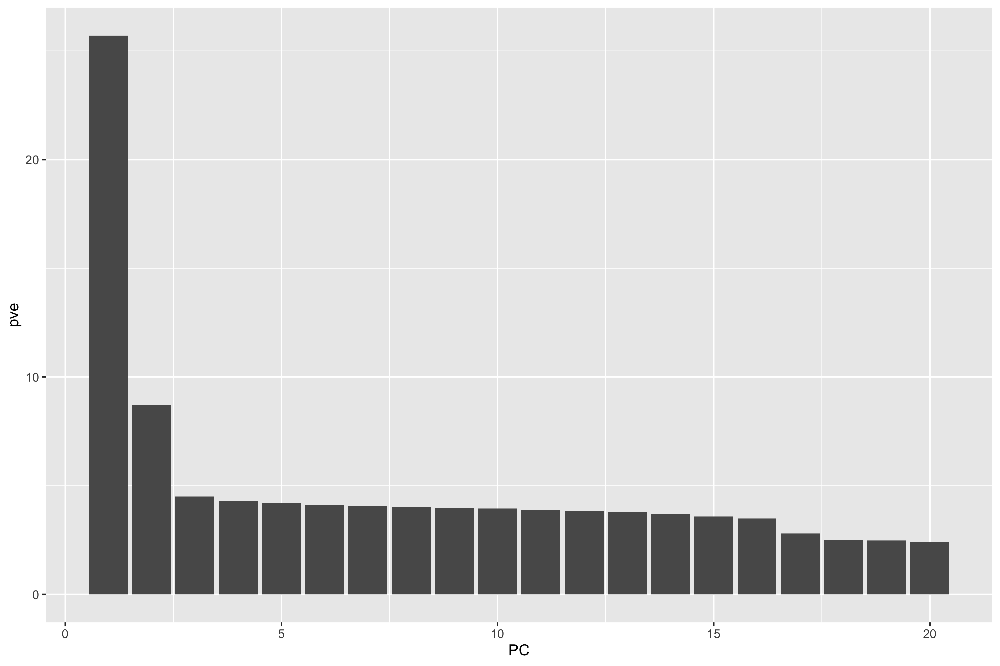
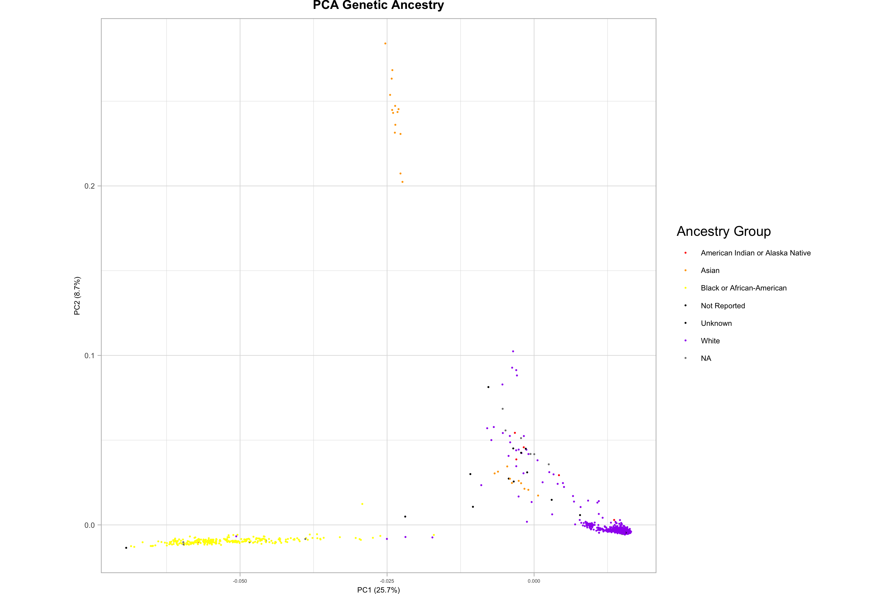
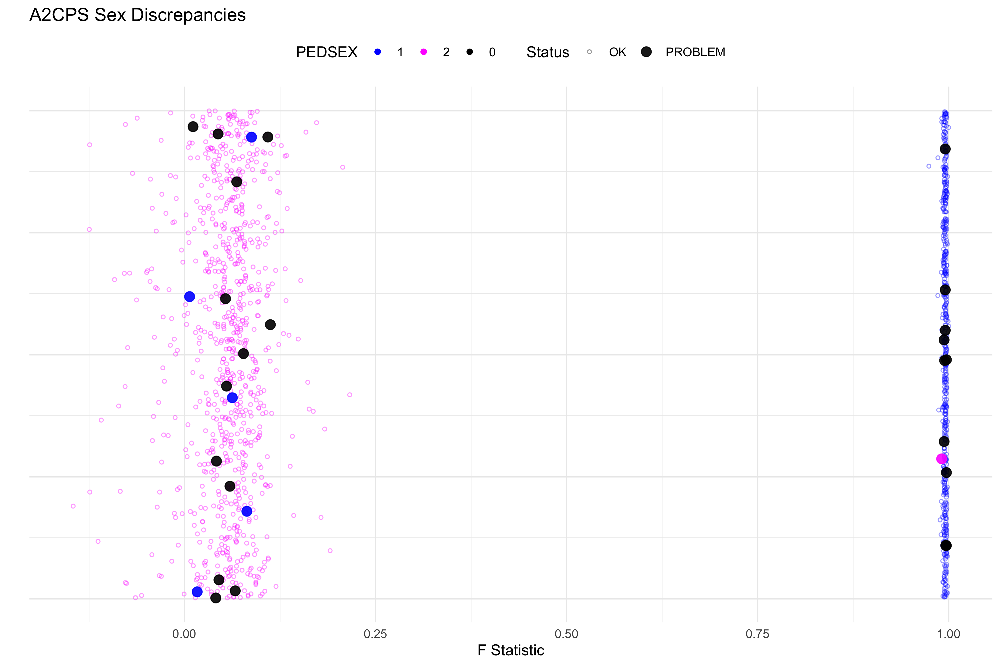

| CHR | VAR ID | POS (cM) | POS (bp) | ALLELE 1 (ALT) | ALLELE 2 (REF) |
|---|---|---|---|---|---|
| 1 | rs9651229 | 0 | 632287 | T | C |
| 1 | rs9701872 | 0 | 632828 | C | T |
| 1 | rs11497407 | 0 | 633147 | A | G |
| 1 | GSA-rs116587930 | 0 | 792461 | A | G |
| 1 | rs3131972 | 0 | 817341 | A | G |
1 Genetic Variant Data
This page provides considerations for A2CPS projects that involve the Genetic Variant data.

Genetic variant data captures individual variation in the human genome with single-nucleotide resolution. Our released SNP array data includes 690,126 genetic loci across all 22 autosomes, the X / Y (sex) chromosomes, and mitochondrial DNA for 1375 participants. At each locus, there is a more common “reference” (REF) allele and a less common “alternate” (ALT) allele, also referred to as the major and minor alleles, respectively. Because humans are diploid, we carry two copies of each chromosome, and thus two alleles at each locus, which may be both REF, both ALT, or one of each (heterozygous). This data enables researchers to examine allele-level variation across the genome at precisely selected sites for each participant. Below, we expand with more granularity how to work with these data, and the quality control measures that were used to create them. Notably, we also used the quality controlled data to impute whole genome sequences using TOPMed’s Imputation Server, information that is included in the “Imputed Genomics” starter kit.
1.1 Starting Project
1.1.1 Locate Data
On TACC, the data are stored underneath the releases. For example, data release v2.1.0 is underneath
/corral-secure/projects/A2CPS/products/consortium-data/pre-surgery-release-2-1-0/omics/gene_variantsThe genetic variant data are underneath the omics/gene_variants folder
$ ls /corral-secure/projects/A2CPS/products/consortium-data/pre-surgery-release-2-1-0/omics/gene_variants
2025-06-02_UCSD_GV_Genotypes_Runlists_1-5_QC_freeze2.bed
2025-06-02_UCSD_GV_Genotypes_Runlists_1-5_QC_freeze2.bim
2025-06-02_UCSD_GV_Genotypes_Runlists_1-5_QC_freeze2.fam
2025-06-02_UCSD_GV_Genotypes_Runlists_1-5_QC_freeze2_Imputed_Genomics.bed
2025-06-02_UCSD_GV_Genotypes_Runlists_1-5_QC_freeze2_Imputed_Genomics.bim
2025-06-02_UCSD_GV_Genotypes_Runlists_1-5_QC_freeze2_Imputed_Genomics.fam
2025-06-02_UCSD_GV_Genotypes_Runlists_1-5_QC_freeze2_Imputed_Genomics.log
2025-06-02_UCSD_GV_Genotypes_Runlists_1-5_QC_freeze2.log
2025-06-02_UCSD_GV_Genotypes_Runlists_1-5_QC_freeze2.nosex
2025-06-02_UCSD_GV_Genotypes_Runlists_1-5_QC_freeze2_PCA_Ind_Info.csvThese files are in the PLINK format.
1.2 Plink Binary File Set
1.2.0.1 .bim
Each row in this file specifics a genetic variant and provides extended information on its location and alleles.
$ cd /corral-secure/projects/A2CPS/products/consortium-data/pre-surgery-release-2-1-0/omics/gene_variants
$ head -5 2025-06-02_UCSD_GV_Genotypes_Runlists_1-5_QC_freeze2.bim- CHR = chromosome #
- Var ID
- rsID = Reference SNP (single nucleotide polymorphism) ID
- GSA = Global Screening Array
- 22:24377823_CNV_GSTT1
- For Variants labeled as such, this ID means CHR:POS:CopyNumberVariant:Gene
- cM (centimorgan) = measure of the frequency genetic recombination. 1 cM is a 1% chance that two markers on a chr will separate due to recombination during meiosis. Often not included.
- bp (base-pair) = The genomic position on a given chromosome.
- Allele 1 = reference, major allele
- Allele 2 = alternate, minor allele
1.2.0.2 .fam
Each row in this file specifics a participant and provides extended information on its identifiers, family, and gender.
$ head -5 2025-06-02_UCSD_GV_Genotypes_Runlists_1-5_QC_freeze2.fam| Family ID | Individual ID | Father ID | Mother ID | Sex | Phenotype |
|---|---|---|---|---|---|
| 1 | P3VO69LyyV2AZ_L27BDmybNy8zN | 0 | 0 | 1 | -9 |
| 2 | 74n6ZMnXd3WmA_L27BDmybNy8zN | 0 | 0 | 1 | -9 |
| 3 | Px3x6X3gWBNA1_L27BDmybNy8zN | 0 | 0 | 2 | -9 |
| 4 | eyPoDR1qoJegX_L27BDmybNy8zN | 0 | 0 | 1 | -9 |
| 5 | 74m9r0BKoMxk3_L27BDmybNy8zN | 0 | 0 | 1 | -9 |
- Family ID (FID) = identifier for the participant’s family
- Individual ID (IID) = identifier for the participant, in the form biospecimenID_runlistID
- Father ID (FaID) = identifier for the participant’s father. A2CPS not ascertained based on family structure.
- Mother ID (MoID) = identifier for the participant’s mother. A2CPS not ascertained based on family structure.
- Sex = 1 : M, 2 : F
- Phenotype = 1 = Control, 2 = Case, 0/-9 if not present. Often not included.
1.2.0.3 .bed
A binary file, unviewable through command line commands such as “cat”. This contains each participant’s genotype data. Stored as bytes:
00 Homozygous for first allele in .bim file
01 Missing genotype
10 Heterozygous
11 Homozygous for second allele in .bim file
To see all files types in plink, go here: File format reference - PLINK 1.9.
1.2.1 Extract Data
To access the variant data, plink2 (or plink 1.9) must be installed. Please see: PLINK 2.0 or PLINK 1.9.
Here, we are storing a set of genetic variants from our primary biomarker list in a text file called ‘snps.txt’. Since we specifically probed these sites, they have longer, study-specific identifiers. By contrast, a typical SNP is assigned a reference SNP ID (rsID), which usually takes the form rs followed by a number, such as rs1, rs105, or rs123456789.
$ cat snps.txt
ilmnseq_rs1799971_ilmndup1,ilmnseq_rs1799971_ilmndup2,rs1799971
ilmnseq_rs6265_ilmndup1,ilmnseq_rs6265_ilmndup2,rs6265
ilmnseq_rs1491850_ilmndup1,ilmnseq_rs1491850_ilmndup2,rs1491850The plink command can then use that file to create a table of the minor allele frequencies for a given set of genetic loci. –bfile is a very common flag in plink, as it is the input binary files (.bim, .bed, .fam) for a given filtering step.
$ ./plink \
--bfile 2025-06-02_UCSD_GV_Genotypes_Runlists_1-5_QC_freeze2 \
--extract snps.txt \
--freq \
--out snp_frequencies Here is the resulting table:
| CHR | SNP | A1 | A2 | MAF | NCHROBS |
|---|---|---|---|---|---|
| 6 | ilmnseq_rs1799971_ilmndup1,ilmnseq_rs1799971_ilmndup2,rs1799971 | G | A | 0.1182 | 2750 |
| 11 | ilmnseq_rs6265_ilmndup1,ilmnseq_rs6265_ilmndup2,rs6265 | T | C | 0.1535 | 2750 |
| 11 | ilmnseq_rs1491850_ilmndup1,ilmnseq_rs1491850_ilmndup2,rs1491850 | C | T | 0.3760 | 2750 |
- CHR = chromosome number
- SNP = SNP identifier
- A1 = minor (alternate) allele
- A2 = major (reference) allele
- MAF = minor allele frequency (calculated # minor allele observations / # total allele observations)
- NCHROBS = total number of allele observations (2 * number of participants)
1.3 Quality Control
The below procedures were performed with these data:
RL1-5.bim
RL1-5.fam
RL1-5.bed
1.3.1 Overall Filters
Participants with > 2% missing genotype calls were removed. In cases of duplicated samples or sibling pairs, one individual from each pair was excluded to avoid overrepresentation of shared genotypes. The individual with lower data quality was preferentially dropped.
Variants with missing genotype calls in more than 20% of participants were excluded.
For the X and Y chromosomes, biologically impossible calls were removed — including heterozygous calls in males (who are hemizygous for these chromosomes) and non-missing Y chromosome calls in females.
1.3.2 Considerations while working with these data
We used a relatively liberal –geno 0.2 filter to retain as many variants as possible. Many studies adopt stricter thresholds (e.g., –geno 0.1 or lower), but we prioritized inclusivity of data in this stage of QC.
We intentionally did not apply a Hardy-Weinberg equilibrium (–hwe) filter. Principal component analysis (PCA) revealed population structure, and applying HWE filtering across pooled subpopulations can lead to inflated Type I error rates due to the Wahlund effect. This occurs when heterozygosity is overestimated across stratified populations (since there are actually more homozygotes in each subpopulation), causing variants to falsely appear as deviating from equilibrium. If desired, users may stratify the data by major ancestry groups and apply HWE filtering within those subsets.
We also chose not to filter on minor allele frequency (–maf) to leave this decision to the end user, depending on whether they are interested in rare or common variants. Common –maf thresholds include 0.05 or 0.01. Note that population structure can influence allele frequency distributions — a variant rare in the total sample may be common within a subpopulation.
The pseudo-autosomal region (PAR) of the X chromosome is often excluded in X chromosome-specific analyses, as it behaves more like an autosome. We leave this decision to researchers conducting such analyses. To perform this separation, a typical command is:
./plink --bfile path/to/x-chr --split-x hg38 --make-bed --out path/to/split-off-PAR-x-chr- Many study designs, such as polygenic risk score calculations, must be cognizant of population structure.
1.3.3 Quality Control Code
Click to show Quality Control Bash Script, which utilizes Plink 1.9
mkdir plots
mkdir helpers
mkdir qc_derivatives
# Step 1: Split files into individual chromosomes
mkdir qc_derivatives/1_by_chr
for chr in {1..26}; do
./plink --bfile RL1-5 --chr $chr --make-bed --out qc_derivatives/1_by_chr/RL1-5_chr${chr}
done
# Step 2: Obtain Variant and Individual Level Summary Statistics on Each Chromosome's Data
mkdir qc_derivatives/2_summary_stats
for chr in {1..22}; do
./plink --bfile qc_derivatives/1_by_chr/RL1-5_chr${chr} --keep-allele-order --missing --freq --hardy --out qc_derivatives/2_summary_stats/RL1-5_ss_chr${chr};
done
# 2.1: RScript to assess which participants > 2% missingness
Rscript ./scripts/missingness.samples.r "$USER_WD"
# Step 3: Drop individuals with high missingness
mkdir qc_derivatives/3_ind_missingness_dropped
for chr in {1..22}; do
./plink --bfile qc_derivatives/1_by_chr/RL1-5_chr${chr} --remove helpers/A2CPS_Ind_Missingness_Drop.txt --keep-allele-order --make-bed --out qc_derivatives/3_ind_missingness_dropped/RL1-5_chr${chr}_ind_missingness_dropped;
done
# Step 4: Variant Quality Control based on Missingness (maf filtering avoided, users choice. hwe filtering avoided, wahlund effect)
mkdir qc_derivatives/4_variant_filtered
for chr in {1..22}; do
./plink --bfile qc_derivatives/3_ind_missingness_dropped/RL1-5_chr${chr}_ind_missingness_dropped --keep-allele-order --geno 0.2 --write-snplist --make-bed --out qc_derivatives/4_variant_filtered/RL1-5_chr${chr}_variant_filtered;
done
# Step 5 / 6: LD Pruning
mkdir qc_derivatives/5_LD_Pruning
for chr in {1..22}; do
./plink --bfile qc_derivatives/4_variant_filtered/RL1-5_chr${chr}_variant_filtered --indep-pairwise 100 5 0.2 --out qc_derivatives/5_LD_Pruning/RL1-5_chr${chr}_LD_Pruning;
done
mkdir qc_derivatives/6_LD_Pruned
for chr in {1..22}; do
./plink --bfile qc_derivatives/4_variant_filtered/RL1-5_chr${chr}_variant_filtered --extract qc_derivatives/5_LD_Pruning/RL1-5_chr${chr}_LD_Pruning.prune.in --make-bed --out qc_derivatives/6_LD_Pruned/RL1-5_chr${chr}_LD_Pruned;
done
# Step 7: Merge
mkdir qc_derivatives/7_Merged
for i in {1..22}; do echo qc_derivatives/6_LD_Pruned/RL1-5_chr${i}_LD_Pruned; done > helpers/RL1-5_chr_LD_Pruned_list.txt
./plink --bfile qc_derivatives/6_LD_Pruned/RL1-5_chr1_LD_Pruned --merge-list helpers/RL1-5_chr_LD_Pruned_list.txt --make-bed --out qc_derivatives/7_Merged/RL1-5_Merged
# Step 8: Heterozygosity Checks
./plink --bfile qc_derivatives/7_Merged/RL1-5_Merged --het --out qc_derivatives/7_Merged/RL1-5_Merged_Het
# Step 9: Identity by Descent Checks - if related or duplicates exist, one of the family-members (the one with worse quality) must be dropped.
./plink --bfile qc_derivatives/7_Merged/RL1-5_Merged --genome --threads 1 --out qc_derivatives/7_Merged/RL1-5_Merged_IBD
# 9.1: RScripts to identify participants to drop based on heterozygosity and poorer-quality related sample
Rscript ./scripts/het.genome.r "$USER_WD"
Rscript ./scripts/missingness.related.comparison.r "$USER_WD"
### Step 10: Sex Typing ###
mkdir qc_derivatives/sex_typing
# create list of individuals to be dropped prior to sex typing, those with high missingness and poorer-quality related individuals
cat helpers/A2CPS_Ind_Missingness_Drop.txt helpers/A2CPS_related_drop.txt > helpers/A2CPS_Pre_Sex_Typing_Sample_Drops.txt
# Step a: Drop Samples that did not pass QC
mkdir qc_derivatives/sex_typing/samples_dropped
./plink --bfile qc_derivatives/1_by_chr/RL1-5_chr23 --remove helpers/A2CPS_Pre_Sex_Typing_Sample_Drops.txt --keep-allele-order --make-bed --out qc_derivatives/sex_typing/samples_dropped/RL1-5_chr23_samples_dropped;
# Step b: Split off X Chr pseudo-autosomal region (whose inheritance patterns mirror those of the autosomes) [chr25]
mkdir qc_derivatives/sex_typing/PAR_Removed
./plink --bfile qc_derivatives/sex_typing/samples_dropped/RL1-5_chr23_samples_dropped --split-x hg38 --make-bed --out qc_derivatives/sex_typing/PAR_Removed/RL1-5_chr23_PAR_Removed
# Step c: LD Pruning
mkdir qc_derivatives/sex_typing/LD_Pruning
./plink --bfile qc_derivatives/sex_typing/PAR_Removed/RL1-5_chr23_PAR_Removed --indep-pairphase 100 5 0.2 --out qc_derivatives/sex_typing/LD_Pruning/RL1-5_chr23_LD_Pruning
mkdir qc_derivatives/sex_typing/LD_Pruned
./plink --bfile qc_derivatives/sex_typing/PAR_Removed/RL1-5_chr23_PAR_Removed --extract qc_derivatives/sex_typing/LD_Pruning/RL1-5_chr23_LD_Pruning.prune.in --make-bed --out qc_derivatives/sex_typing/LD_Pruned/RL1-5_chr23_LD_Pruned
# Step d: MAF Estimates
mkdir qc_derivatives/sex_typing/MAF
./plink --bfile qc_derivatives/sex_typing/LD_Pruned/RL1-5_chr23_LD_Pruned --freq --out qc_derivatives/sex_typing/MAF/RL1-5_chr23_LD_Pruned_MAF
# Step e: Sex Check
./plink --bfile qc_derivatives/sex_typing/LD_Pruned/RL1-5_chr23_LD_Pruned --read-freq qc_derivatives/sex_typing/MAF/RL1-5_chr23_LD_Pruned_MAF.frq --check-sex 0.3 0.75 --out qc_derivatives/sex_typing/sex_check
# Step f: Create Plots and create list of participants to drop, where we were unable to resolve the sex discrepancies with REDCap or EHR data.
Rscript ./scripts/sex.typing.r "$USER_WD"
# Step 11: Return to pre-LD-Pruned files and merge.
mkdir qc_derivatives/8_Merged_Pre_LD
for i in {1..22}; do echo qc_derivatives/4_variant_filtered/RL1-5_chr${i}_variant_filtered; done > helpers/RL1-5_chr_Pre_LD_list.txt
./plink --bfile qc_derivatives/4_variant_filtered/RL1-5_chr1_variant_filtered --merge-list helpers/RL1-5_chr_Pre_LD_list.txt --make-bed --out qc_derivatives/8_Merged_Pre_LD/RL1-5_Merged_Pre_LD
# 11.1: Create comprehensive file with all participant drops so far
cat helpers/A2CPS_Ind_Missingness_Drop.txt helpers/A2CPS_related_and_sex_discrepancy_drop.txt > helpers/A2CPS_Pre_Chr_XYMT_QC_Sample_Drops.txt
### X, Y, and MT QC ###
### X Chromosome QC ###
mkdir X_Chr
# Step a: drop samples with high missingness, higher-missingness related samples, and unrecoverable sex typing discrepancies, fix the sex discrepancies
mkdir X_Chr/Samples_Dropped
./plink --bfile qc_derivatives/1_by_chr/RL1-5_chr23 --remove helpers/A2CPS_Pre_Chr_XYMT_QC_Sample_Drops.txt --keep-allele-order --make-bed --out X_Chr/Samples_Dropped/RL1-5_chr23_samples_dropped
# step b: update sex
mkdir X_Chr/Sex_Updated
./plink --bfile X_Chr/Samples_Dropped/RL1-5_chr23_samples_dropped --update-sex helpers/A2CPS_update_sex.txt --keep-allele-order --make-bed --out X_Chr/Sex_Updated/RL1-5_chr23_Sex_Updated
# Step c: Take summary statistics in case necessary to further remove samples
mkdir X_Chr/Summary_Stats
./plink --bfile X_Chr/Sex_Updated/RL1-5_chr23_Sex_Updated --missing --freq --out X_Chr/Summary_Stats/RL1-5_chr23_Summary_Stats
# Step d: Filter out poor-quality variants
mkdir X_Chr/Variant_Filtered
./plink --bfile X_Chr/Sex_Updated/RL1-5_chr23_Sex_Updated --geno 0.2 --write-snplist --keep-allele-order --make-bed --out X_Chr/Variant_Filtered/RL1-5_chr23_variant_filtered
awk '{print $3}' X_Chr/Variant_Filtered/RL1-5_chr23_variant_filtered.hh | sort -u > X_Chr/Variant_Filtered/hh_snps_x_to_exclude.txt
# step e: Filter out those included in the .hh file
grep -vFf X_Chr/Variant_Filtered/hh_snps_x_to_exclude.txt X_Chr/Variant_Filtered/RL1-5_chr23_variant_filtered.snplist > X_Chr/Variant_Filtered/RL1-5_chr23_variant_filtered.no_hh.snplist
### Y Chromosome QC ###
mkdir Y_Chr
# Step a: drop samples with high missingness, higher-missingness related samples, and unrecoverable sex typing discrepancies
mkdir Y_Chr/Samples_Dropped
./plink --bfile qc_derivatives/1_by_chr/RL1-5_chr24 --remove helpers/A2CPS_Pre_Chr_XYMT_QC_Sample_Drops.txt --keep-allele-order --make-bed --out Y_Chr/Samples_Dropped/RL1-5_chr24_samples_dropped
# step b: update sex
mkdir Y_Chr/Sex_Updated
./plink --bfile Y_Chr/Samples_Dropped/RL1-5_chr24_samples_dropped --update-sex helpers/A2CPS_update_sex.txt --keep-allele-order --make-bed --out Y_Chr/Sex_Updated/RL1-5_chr24_Sex_Updated
# Step c: Take summary statistics in case necessary to further remove samples
mkdir Y_Chr/Summary_Stats
./plink --bfile Y_Chr/Sex_Updated/RL1-5_chr24_Sex_Updated --missing --freq --out Y_Chr/Summary_Stats/RL1-5_chr24_Summary_Stats
# Step d: Filter out poor-quality variants
mkdir Y_Chr/Variant_Filtered
./plink --bfile Y_Chr/Sex_Updated/RL1-5_chr24_Sex_Updated --geno 0.2 --keep-allele-order --write-snplist --make-bed --out Y_Chr/Variant_Filtered/RL1-5_chr24_variant_filtered
awk '{print $3}' Y_Chr/Variant_Filtered/RL1-5_chr24_variant_filtered.hh | sort -u > Y_Chr/Variant_Filtered/hh_snps_y_to_exclude.txt
# step e: Filter out those included in the .hh file
grep -vFf Y_Chr/Variant_Filtered/hh_snps_y_to_exclude.txt Y_Chr/Variant_Filtered/RL1-5_chr24_variant_filtered.snplist > Y_Chr/Variant_Filtered/RL1-5_chr24_variant_filtered.no_hh.snplist
### Mitochondrial DNA ###
mkdir MT_Chr
# Step a: drop samples with high missingness, higher-missingness related samples, and unrecoverable sex typing discrepancies
mkdir MT_Chr/Samples_Dropped
./plink --bfile qc_derivatives/1_by_chr/RL1-5_chr26 --remove helpers/A2CPS_Pre_Chr_XYMT_QC_Sample_Drops.txt --keep-allele-order --make-bed --out MT_Chr/Samples_Dropped/RL1-5_chr26_samples_dropped
# step b: update sex
mkdir MT_Chr/Sex_Updated
./plink --bfile MT_Chr/Samples_Dropped/RL1-5_chr26_samples_dropped --update-sex helpers/A2CPS_update_sex.txt --keep-allele-order --make-bed --out MT_Chr/Sex_Updated/RL1-5_chr26_Sex_Updated
# Step c: Take summary statistics in case necessary to further remove samples
mkdir MT_Chr/Summary_Stats
./plink --bfile MT_Chr/Sex_Updated/RL1-5_chr26_Sex_Updated --missing --freq --out MT_Chr/Summary_Stats/RL1-5_chr26_Summary_Stats
# Step d: Filter out poor-quality variants
mkdir MT_Chr/Variant_Filtered
./plink --bfile MT_Chr/Sex_Updated/RL1-5_chr26_Sex_Updated --geno 0.2 --keep-allele-order --write-snplist --make-bed --out MT_Chr/Variant_Filtered/RL1-5_chr26_variant_filtered
## LIST OF INDIVIDUALS TO DROP ##
cat helpers/A2CPS_Ind_Missingness_Drop.txt helpers/A2CPS_related_and_sex_discrepancy_drop.txt > A2CPS_RL1-5_Preparation_Files/A2CPS_RL1-5_Final_Sample_Drop_List.txt
## LIST OF SNPs TO KEEP ##
cat qc_derivatives/4_variant_filtered/RL1-5_chr{1..22}_variant_filtered.snplist X_Chr/Variant_Filtered/RL1-5_chr23_variant_filtered.no_hh.snplist Y_Chr/Variant_Filtered/RL1-5_chr24_variant_filtered.no_hh.snplist MT_Chr/Variant_Filtered/RL1-5_chr26_variant_filtered.snplist > A2CPS_RL1-5_Preparation_Files/RL1-5_all_chr_variant_filtered.snplist
## LIST OF SEXES TO UPDATE ##
cp helpers/A2CPS_update_sex.txt A2CPS_RL1-5_Preparation_Files/A2CPS_RL1-5_Update_Sex_List.txt
# USE THIS LINE TO OBTAIN FINAL FILES QC FIles, still with participants outside of Freeze 2 ##
mkdir ./A2CPS_RL1-5_QCed
./plink --bfile RL1-5 --remove A2CPS_RL1-5_Preparation_Files/A2CPS_RL1-5_Final_Sample_Drop_List.txt --extract A2CPS_RL1-5_Preparation_Files/RL1-5_all_chr_variant_filtered.snplist --update-sex A2CPS_RL1-5_Preparation_Files/A2CPS_RL1-5_Update_Sex_List.txt --keep-allele-order --make-bed --out A2CPS_RL1-5_QCed/A2CPS_RL1-5_QCed
########################
## FINAL FOR RELEASE: ##
########################
# Subset only Freeze 2 #
Rscript ./A2CPS_RL1-5_QCed/Freeze2.R "$USER_WD"
mkdir Freeze_2
./plink --bfile RL1-5 --remove A2CPS_RL1-5_Preparation_Files/A2CPS_RL1-5_Final_Sample_Drop_List_Only_Freeze_2.txt --extract A2CPS_RL1-5_Preparation_Files/RL1-5_all_chr_variant_filtered.snplist --update-sex A2CPS_RL1-5_Preparation_Files/A2CPS_RL1-5_Update_Sex_List.txt --keep-allele-order --make-bed --out Freeze_2/A2CPS_Freeze_21.3.3.1 Supplementary QC Files: RScripts
Click to show Supplementary RScript #1: Determining High Missingness Individuals (missingness.samples.r)
library(data.table)
combined_data <- data.frame()
args <- commandArgs(trailingOnly = TRUE)
user_wd <- args[1]
setwd(user_wd)
# read in and combine .imiss file (individual-level missingness)
for (i in 1:22) {
file_name <- sprintf("./qc_derivatives/2_summary_stats/RL1-5_ss_chr%d.imiss", i)
current_data <- read.table(file_name, header = TRUE)
combined_data <- rbind(combined_data, current_data)
}
# DAT HAS EACH MISSING CALL RATE (22 per participant)
dat <- combined_data$"F_MISS"
number.geno <- combined_data$N_GENO # total genotyped SNPs across autosomes
number.missed <- combined_data$N_MISS # total missed SNPs across autosomes across participants
matrix.geno <- matrix(number.geno,ncol=22)
summed.geno <- sum(matrix.geno[1,]) # total autosomal SNPs
matrix.missed <- matrix(number.missed,ncol=22)
individual.missed.percent <- rowSums(matrix.missed) / summed.geno
missingness.table <- data.table(
FAMID = current_data$FID,
ID = current_data$IID,
Missingness = individual.missed.percent
)
fwrite(missingness.table, "./helpers/A2CPS_RL1-5_Missingness.csv")
# subset those with over %2 missingness
over.two <- which(individual.missed.percent > 0.02)
over.two.values <- individual.missed.percent[over.two]
over.two.missing.SNPs <- rowSums(matrix.missed)[over.two]
subject_ID <- combined_data$IID[over.two]
high.ind.missingness <- data.table(
ID = over.two,
SUBJECT_ID = subject_ID,
MISSINGNESS = over.two.values,
SNPs_MISSED = over.two.missing.SNPs
)
# table with high missingness individuals for PLINK Dropping
for_drop <- high.ind.missingness[, .(ID, SUBJECT_ID)]
fwrite(for_drop, "./helpers/A2CPS_Ind_Missingness_Drop.txt", sep = " ", col.names = FALSE)
# spaghetti plots across chromosomes
r <- range(dat)
pdf("./plots/missingness.samples.perchr.spaghetti.A2CPS.pdf",width=9,height=7)
par(las=1)
tmp <- matrix(dat,ncol=22)
plot(c(1,22),r,type="n",xlab="chromosome",ylab="% missing",xaxt="n")
axis(1,1:22)
for(j in 1:nrow(tmp)) lines(1:22,tmp[j,],col="orange")
dev.off()
# boxplot sample average
tmp <- matrix(dat,ncol=22) #temp is a matrix with rows as participants and columns as chr## and cells as FMISS
z.pm <- apply(tmp,1,mean) # z.pm is a vector with the mean values of FMISS for each participant ie. what is their average FMISS rate across participants
pdf("./plots/missingness.samples.averages.A2CPS.pdf",width=9,height=6)
par(mfrow=c(1,2),las=1)
boxplot(z.pm)
boxplot(z.pm,log="y")
dev.off()
# percentile missingness plot
n <- length(z.pm)
pdf("./plots/missingness.samples.percentile.A2CPS.pdf",width=8,height=7)
par(mfrow=c(1,1),las=1)
plot(c(0.9,1),c(0,0.4),type="n",xlab="percentile missingness",ylab="% missing")
abline(h=seq(0,0.1,0.01),lty="dotted",col="lightgrey")
lines((1:n)/n,sort(z.pm),type="b",cex=0.5,pch=20)
dev.off()Click to show Supplementary RScript #2: Heterozygosity and Relatedness Checks (het.genome.r)
library(data.table)
library(ggplot2)
args <- commandArgs(trailingOnly = TRUE)
user_wd <- args[1]
setwd(user_wd)
# ---------- TESTING HETEROZYGOSITY ------------
a2cps.h <- fread("./qc_derivatives/7_Merged/RL1-5_Merged_Het.het", stringsAsFactors = F)
colnames(a2cps.h) <- c("FID","IID","O_HOM", "E_HOM", "N_NM", "F")
a2cps.h[,'Het_Rate' := (N_NM - O_HOM)/N_NM]
a2cps.h[, 'Pop' := "A2CPS"]
dat2 <- rbind(a2cps.h)
p.ht <- ggplot(data=dat2, aes(x=factor(Pop, levels = c("A2CPS")), y=Het_Rate, group=Pop, color=Pop)) + geom_boxplot(outlier.colour = "red", show.legend = F) + scale_x_discrete(name = "Populations") + scale_y_continuous(name = "Het Rate", limits = c(0.0,0.32)) + ggtitle("Heterozygosity Rates") + theme_bw() + theme(axis.text.x=element_text(size=16, color="black",hjust=1), axis.text.y=element_text(size=16, color = "black"), axis.title.x = element_text(size=18, face = "bold"), axis.title.y = element_text(size=18, face = "bold"), panel.background=element_blank(), panel.grid.minor=element_blank(), panel.grid.major=element_blank(), plot.title = element_text(hjust = 0.5, size=20, face = "bold"))
ggsave("./plots/A2CPS_RL1-5_Het.png", p.ht, width = 8, height = 6)
# ---------- TESTING PARENTAL RELATEDNESS ------------
philippines <- fread("./qc_derivatives/7_Merged/RL1-5_Merged_IBD.genome", stringsAsFactors = F)
philippines <- philippines[which(philippines$Z0 != 1)]
png("./plots/A2CPS_RL1-5_Relatedness.png", width=3000, height=2000, res=300)
par(pch=16)
with(philippines, plot(Z0, Z1, xlim=c(0,1), ylim=c(0,1), type="n", main="A2CPS Z1 > 0 Relatedness"))
with(subset(philippines, RT == "UN"), points(Z0, Z1, col=1, cex=0.4))
dev.off()
related <- philippines[which(philippines$Z0 < 0.5), ]
fwrite(related, "./helpers/A2CPS_RL1-5_related.csv")Click to show Supplementary RScript #3: Determining which Related Participants to Drop (missingness.related.comparison.r)
library(data.table)
args <- commandArgs(trailingOnly = TRUE)
user_wd <- args[1]
setwd(user_wd)
missingness.table <- fread("./helpers/A2CPS_RL1-5_Missingness.csv")
related <- fread("./helpers/A2CPS_RL1-5_related.csv")
related_IDs_row1 <- related$FID1
related_IDs_row2 <- related$FID2
related_missingness_row1 <- missingness.table[which(missingness.table$FAMID %in% related_IDs_row1), ]
related_missingness_row2 <- missingness.table[which(missingness.table$FAMID %in% related_IDs_row2), ]
# Reorder to match related_IDs_row1 and related_IDs_row2
comp1 <- related_missingness_row1[match(related_IDs_row1, related_missingness_row1$FAMID)]
comp2 <- related_missingness_row2[match(related_IDs_row2, related_missingness_row2$FAMID)]
complist <- list()
for (ind in seq_len(nrow(comp1))) {
related_pair <- c(comp1$FAMID[ind], comp2$FAMID[ind])
complist[[ind]] <- related_pair
}
drop.list <- vector()
for (pair in complist) {
missingness.1 <- missingness.table$Missingness[pair[1]]
missingness.2 <- missingness.table$Missingness[pair[2]]
if (missingness.1 > missingness.2) {
drop.list <- c(drop.list, pair[1])
}
else {
drop.list <- c(drop.list, pair[2])
}
}
IID <- missingness.table[match(drop.list, missingness.table$FAMID), ]$ID
drop.table <- data.table(
FAMID <- drop.list,
IID <- IID
)
# Drop the higher-missingness related / duplicate individual
fwrite(drop.table, sep = " ", col.names = F,"./helpers/A2CPS_related_drop.txt")Click to show Supplementary RScript #4: Sex Typing Discrepancy Analysis and Handling of Discrepancies (sex.typing.r)
library(data.table)
library(ggplot2)
args <- commandArgs(trailingOnly = TRUE)
user_wd <- args[1]
setwd(user_wd)
st_Info <- fread("qc_derivatives/sex_typing/sex_check.sexcheck")
st_Info_df <- as.data.frame(st_Info)
ok_df <- st_Info_df[st_Info_df$STATUS == "OK", ]
problem_df <- st_Info_df[st_Info_df$STATUS == "PROBLEM", ]
info1_4 <- fread("./demographic_data/2025-01-13_UCSD_GV_Genotypes_Runlists_1-4_QC.csv")[, c("subject_guid","individual_file_tag")]
info5 <- fread("./demographic_data/2025-02-11_UCSD_GV_Genotypes_Runlist_5_QC.csv")[, c("subject_guid","individual_file_tag")]
info_all <- rbind(info1_4, info5)
problem_IIDs <- problem_df$IID ## The subject IDs of the problematic samples
info_problem_IIDs <- info_all[which(info_all$individual_file_tag %in% problem_IIDs), ]
merged_dt <- merge(
problem_df,
info_problem_IIDs,
by.x = "IID",
by.y = "individual_file_tag",
all.x = TRUE
)
setDT(merged_dt)
merged_dt[, subject_guid := toupper(as.character(subject_guid))]
redcap <- fread("./demographic_data/REDCap/demographics-2025-01-10 (1).csv")
redcap.genident <- redcap$genident
redcap.sex <- redcap$sex
setDT(redcap)
merged_dt <- redcap[, .(guid, genident)][merged_dt, on = .(guid = subject_guid)]
merged_dt <- redcap[, .(guid, sex)][merged_dt, on = .(guid = guid)]
ehr1 <- fread("./demographic_data/EHR/reformatted_ns_clinicals_and_case_characteristics.csv")[, c("guid", "sex_ehr")]
ehr2 <- fread("./demographic_data/EHR/reformatted_ru_clinicals_and_case_characteristics.csv")[, c("guid", "sex_ehr")]
ehr3 <- fread("./demographic_data/EHR/reformatted_um_clinicals_and_case_characteristics.csv")[, c("guid", "sex_ehr")]
ehr <- rbind(ehr1, ehr2, ehr3)
merged_dt <- ehr[, .(guid, sex_ehr)][merged_dt, on = .(guid = guid)]
setnames(merged_dt,
old = c("sex", "genident", "sex_ehr"),
new = c("REDCap: sex", "REDCap: genident", "EHR: sex_ehr"))
merged_dt[, rescue := ifelse(
(SNPSEX != `REDCap: genident` & !is.na(`REDCap: genident`) & is.na(`REDCap: sex`)) |
(SNPSEX != `REDCap: sex` & !is.na(`REDCap: sex`) & is.na(`REDCap: genident`)) |
(SNPSEX != `REDCap: genident` & SNPSEX != `REDCap: sex` & !is.na(`REDCap: genident`) & !is.na(`REDCap: sex`)),
"NO",
"YES"
)]
merged_dt_no <- merged_dt[which(merged_dt$rescue == "NO"), ]
merged_dt_yes <- merged_dt[which(merged_dt$rescue == "YES"), ]
drop_sex_discrepancy <- data.table(
ID = merged_dt_no$FID,
IID = merged_dt_no$IID
)
related_drop <- fread("./helpers/A2CPS_related_drop.txt")
setnames(related_drop, c("ID", "IID"))
drop_sex_discrepancy_and_related <- rbind(drop_sex_discrepancy, related_drop)
fwrite(drop_sex_discrepancy_and_related, col.names = F, sep = " ", "helpers/A2CPS_related_and_sex_discrepancy_drop.txt")
update_sex <- data.table(
ID = merged_dt_yes$FID,
IID = merged_dt_yes$IID,
Sex = merged_dt_yes$SNPSEX
)
fwrite(update_sex, col.names = F, sep = " ", "./helpers/A2CPS_update_sex.txt")
## Graphing
ok_df$LegendStatus <- "OK"
problem_df$LegendStatus <- "PROBLEM"
combined_df <- rbind(ok_df, problem_df)
png("./plots/A2CPS_RL1-5_Sex_Typing.png", width = 3000, height = 2000, res = 300)
p <- ggplot() +
geom_point(data = ok_df, aes(x = F, y = 0, color = factor(PEDSEX), shape = "OK", size = "OK", alpha = "OK"),
position = position_jitter(width = 0, height = 0.1)) +
geom_point(data = problem_df, aes(x = F, y = 0, color = factor(PEDSEX), shape = "PROBLEM", size = "PROBLEM", alpha = "PROBLEM"),
position = position_jitter(width = 0, height = 0.1)) +
scale_color_manual(values = c("0" = "black", "1" = "blue", "2" = "magenta")) +
scale_shape_manual(name = "Status", values = c("OK" = 1, "PROBLEM" = 19)) +
scale_size_manual(name = "Status", values = c("OK" = 1, "PROBLEM" = 3)) +
scale_alpha_manual(name = "Status", values = c("OK" = 0.4, "PROBLEM" = 0.9)) +
labs(title = "A2CPS Sex Discrepancies",
x = "F Statistic",
y = "",
color = "PEDSEX") +
theme_minimal() +
theme(legend.position = "top",
axis.ticks.y = element_blank(),
axis.text.y = element_blank())
print(p)
dev.off()Click to show Supplementary RScript #5: Subsetting just Freeze 2 Participants (Freeze2.R)
library(data.table)
args <- commandArgs(trailingOnly = TRUE)
user_wd <- args[1]
setwd(user_wd)
setwd("./A2CPS_RL1-5_QCed/")
current_biospecimen_id <- sub("_.*", "", fread("A2CPS_RL1-5_QCed.fam")$V2)
freeze2 <- fread("freeze2_ids_ucsd_gv.csv")$biospecimen_id
drop_not_in_freeze2_list <- current_biospecimen_id[which(current_biospecimen_id %notin% freeze2)]
fam.file <- fread("A2CPS_RL1-5_QCed.fam")
fam.file[, prefix := sub("_.*", "", V2)]
matched_rows <- fam.file[prefix %in% drop_not_in_freeze2_list, .(V1, V2)]
fwrite(matched_rows, col.names = F, sep = " ", "notFreeze2.txt")
previous_drops <- fread("/Users/sethberke/a2cps.gv.qc.auto/A2CPS_RL1-5_Preparation_Files/A2CPS_RL1-5_Final_Sample_Drop_List.txt")
total_drops <- rbind(matched_rows, previous_drops)
fwrite(total_drops, col.names = F, sep = " ", "/Users/sethberke/a2cps.gv.qc.auto/A2CPS_RL1-5_Preparation_Files/A2CPS_RL1-5_Final_Sample_Drop_List_Only_Freeze_2.txt")1.3.4 Principal Component Analysis
Systematic differences in ancestry between groups – population stratification – can lead to spurious associations with allele frequencies, and so multiethnic analyses often include genetic principal components to account for the variation imposed by population structure. Here we plotted the PCA values across two axes, and can see distinct populations, which must be accounted for in many study designs, such as polygenic risk score (PRS) calculations.
Click to show Principal Components Bash Script, which utilizes Plink 1.9
### Principal Components Analysis ###
mkdir principle_components_analysis
# Step a: LD Pruning window of 50kb, step size 10bp, and r^w threshold of 0.1
mkdir principle_components_analysis/LD_Pruning
./plink --bfile ./A2CPS_Freeze_2 --double-id --allow-extra-chr --indep-pairwise 50 10 0.1 --out ./principle_components_analysis/LD_Pruning/a2cps_rl12345_LDPruned
# Step b: Extract SNPs in equilibrium
mkdir principle_components_analysis/LD_Pruned
./plink --bfile ./A2CPS_Freeze_2 --double-id --allow-extra-chr --extract ./principle_components_analysis/LD_Pruning/a2cps_rl12345_LDPruned.prune.in --make-bed --out ./principle_components_analysis/LD_Pruned/a2cps_rl12345_LDPrunedFinal
# Step c: Derive PCA Eigenvalues and Eigenvectors
mkdir principle_components_analysis/PCA
./plink --bfile principle_components_analysis/LD_Pruned/a2cps_rl12345_LDPrunedFinal --double-id --allow-extra-chr --pca --out principle_components_analysis/PCA/pca_info
# Step d: Graph Scree and PCA Plots
Rscript ./scripts/pca.r "$USER_WD"Click to show Supplementary RScript #6: Principal Components Analysis (pca.r)
## load required packages
library(tidyverse)
library(httr)
library(writexl)
library(data.table)
args <- commandArgs(trailingOnly = TRUE)
user_wd <- args[1]
setwd(user_wd)
base_url="https://vbr-api.a2cps.cloud"
username <- VBR_Username
password <- VBR_Password
resp = POST(paste(base_url, "/auth/token", sep=""), body = list(username=username, password=password), encode = "form")
access_token = content(resp, as="parsed")$access_token
resp = GET(paste(base_url, "/biospecimens/private?offset=0&limit=0", sep=""), add_headers(authorization=paste("Bearer", access_token)))
bio <- jsonlite::fromJSON(content(resp, as = "text"))
bioDF <- as.data.table(bio)
fam <- read.table("./Freeze_2/A2CPS_Freeze_2.fam", header = FALSE)
bioID_PLINK <- sub("_.*", "", fam$V2)
bioDF_Mapping_Plink <- bioDF[which(bioDF$biospecimen_id %in% bioID_PLINK), ]
# BioID and Race
bioDF_Mapping_Cols <- bioDF_Mapping_Plink[, c("biospecimen_id","race")]
fam <- read.table("./Freeze_2/A2CPS_Freeze_2.fam", header = FALSE)
fam$V2 <- sub("_.*", "", fam$V2)
colnames(fam) <- c("Famid", "biospecimen_id", "Fatid", "Motid", "Gender", "Phenotype")
fam_with_race <- merge(fam, bioDF_Mapping_Cols, by = "biospecimen_id", all.x = TRUE)
# PCA
library(tidyverse)
setwd("./Freeze_2/principle_components_analysis/PCA")
pca <- read_table2("./pca_info.eigenvec", col_names = FALSE)
eigenval <- scan("./pca_info.eigenval")
pca$X2 <- sub("_.*", "", pca$X2)
pca <- pca[,-1]
names(pca)[1] <- "biospecimen_id"
names(pca)[2:ncol(pca)] <- paste0("PC",1:(ncol(pca)-1))
pca <- merge(pca, bioDF_Mapping_Cols, by = "biospecimen_id", all.x = TRUE)
pca <- pca[!duplicated(pca$biospecimen_id), ]
# Subsetting for Graph
race <- rep(NA, length(pca$biospecimen_id))
race[grep("White", pca$race)] <- "White"
race[grep("African-American", pca$race)] <- "Black or African-American"
race[grep("Asian", pca$race)] <- "Asian"
race[grep("American Indian or Alaska Native", pca$race)] <- "American Indian or Alaska Native"
race[grep("Unknown", pca$race)] <- "Unknown"
race[grep("Not Reported", pca$race)] <- "Not Reported"
pca <- as.tibble(data.frame(pca, race))
pve <- data.frame(PC = 1:20, pve = eigenval/sum(eigenval)*100)
percent_variance_explained <- pve$pve
setwd(user_wd)
# Graphing
png("./Freeze_2/principle_components_analysis/PCA/A2CPS_RL1-5_PCA_Scree_Plot.png", width = 3000, height = 2000, res = 300)
a <- ggplot(pve, aes(PC, pve)) + geom_bar(stat = "identity")
a + ylab("Percentage Variance Explained") + theme_light()
print(a)
dev.off()
png("./Freeze_2/principle_components_analysis/PCA/A2CPS_RL1-5_PCA_Plot.png", width = 3000, height = 2000, res = 300)
b <- ggplot(pca, aes(PC1, PC2, col = race)) +
geom_point(size = 0.075) +
coord_fixed() +
theme_light() +
ggtitle("PCA Genetic Ancestry") +
xlab(paste0("PC1 (", signif(pve$pve[1], 3), "%)")) +
ylab(paste0("PC2 (", signif(pve$pve[2], 3), "%)")) +
theme(
aspect.ratio = 1,
plot.margin = margin(0, 0, 0, 0, "cm"),
axis.title.x = element_text(size = 6, family = "Arial"),
axis.title.y = element_text(size = 6, family = "Arial"),
axis.text.x = element_text(size = 4, family = "Arial"),
axis.text.y = element_text(size = 6, family = "Arial"),
plot.title = element_text(size = 10, face = "bold", hjust = 0.5),
legend.text = element_text(size = 6),
legend.key.size = unit(0.5, "cm")
) +
scale_colour_manual(name = "Ancestry Group", values = c("red", "orange", "yellow", "black", "black", "purple"))
print(b)
dev.off()
# PC Values for each participant
pca <- pca[, c(1,2,3,22)]
fwrite(pca, "./Freeze_2/principle_components_analysis/PCA/A2CPS_RL1-5_PCA_Ind_Info.csv")


1.3.5 Sex Typing
This procedure confirms the gender of each participant as documented in the study by testing X Chromosome homozygosity levels. Male participants are haploid for the X chromosome whereas females are diploid, thus we expect a high deviation from the genotypes predicted by Hardy-Weinberg equilibrium (HWE) (0/0, 0/1, 1/1) with male participants, as their alleles should exclusively be either 0 or 1 (hemizygous). This deviation is captured by the F Statistic. As a general rule, an F Stat of 0.3 is the maximum seen for females and 0.75 is the minimum for males (as reflected by the chart below). This chart demonstrates the deviation from HWE as we expect ≈ 1 almost always for males, who will consistently deviate from HWE due to X chromosome hemizygosity, and we expect females to have a normal distribution close to around 0 (as they are heterozygous for the x chromosome). We used this chart to visualize sex discrepancies, and checked these against REDCap and EHR data to settle and recover as many sex discrepancies as possible. Refer to supplementary RScript “sex.typing.r” for the code used to generate this graph. In the graph, the blue dots are males, pink are females, and black are cases where sex was undefined in the .fam file.

1.3.7 Imputation
Imputation is the process of statistically inferring whole genome sequences from SNP Array data using haplotype reference panels. For our imputation we used the TOPMed Imputation Server that implements the TOPMed R3 reference panel. View Chapter 2 for imputation details.